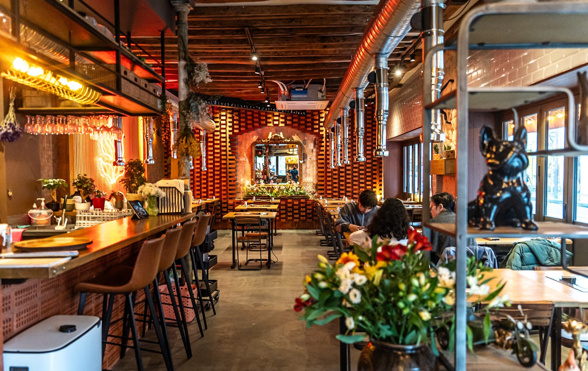

Des recettes traditionnelles coréennes

Tout a commencé autour d'une table familiale à Séoul, où le mot que l’on entendait le plus souvent était « Juseyo », ce qui signifie gentiment « S’il vous plaît, donnez-moi... ». Que ce soit pour réclamer une portion supplémentaire de tteokbokki pimenté ou un bol de riz fumant, ce mot était synonyme de partage, de gourmandise et de convivialité.
Inspirés par cette générosité coréenne, nous avons décidé de traverser les frontières pour poser nos valises ici. Notre mission ? Créer un lieu vivant où la street-food vibrante de Hongdae croise les recettes secrètes de nos grands-mères.
Chez Juseyo, chaque plat est une invitation au voyage. Alors, installez-vous, imprégnez-vous de l'ambiance, et dites-nous simplement ce qui vous fait envie.
Kimchi, Bibimbap ou Poulet frit ? Demandez, nous cuisinons avec le cœur !
Veuillez vérifier votre connexion.